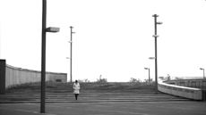

|
NOTES ON FILM 02
Norbert Pfaffenbichler | Ö 2006 | 96 min.
Format: Beta SP
Original language: German
Script: Norbert Pfaffenbichler
Camera: Dariusz Kowalski (Krzeczek)
Sound: Robert Gründler, Stefan Löwenstein,
Christian Schröder
Music: Bernhard Lang
Cast: Erdogam Yildiz, Ursula Strauss, Lutz
Wiskemann, Oktay Günes
Verleih: Sixpack Film
www.pfaffenbichlerschreiber.org
This experiment on the theme of difference and repetition combines methods used in structural films and elements of narrative cinema. The content was supplied by Robert Frank's film "OK End Here" (USA 1963). Moments from the life of a couple were arraged in series on the basis of an alphanumeric editing concept.
- Norbert Pfaffenbichler
Norbert Pfaffenbichler, born in 1967, lives and works in Vienna. He studied Visual Media Design at the University of Applied Arts in Vienna. Since 1996 he works as an independent artist, film maker and curator and publishes articles about digital and experimental positions of contemporary art.
Films: Wirehead 1996 | Santora 1997 | Traxdata 1998 | 36 2001 | Notes On Film 01 Else 2002 | Notes On MAZY 2004 | Piano Phase 2004 | Notes On Film 02 2006 | a1b2c3 2006
back
|